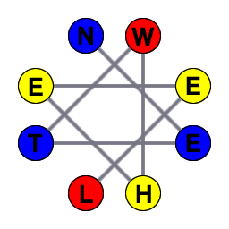
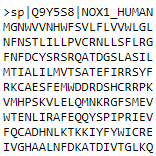
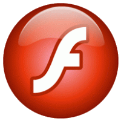

Projects
NetWheels: App created using R/Shiny to generate peptide Helical Wheels and Nets.
Note: in case you're looking for NetWheels from the LBQP website, this is the same one. The laboratory website has been suffering technical problems and I decided to host the App on my own, at least for the time being. You can also download the source code from GitHub and run it locally.
FastaTools: App created using R/Shiny to perform different tasks with FASTA files such as filters and merges.
 Meu Blog: My blog (in portuguese), rarely updated.
Meu Blog: My blog (in portuguese), rarely updated.
Água: Flash 8 didatic material about water properties (in portuguese).
 Siglas de Brasília: A list with all the acronyms of the city of Brasília.
Siglas de Brasília: A list with all the acronyms of the city of Brasília.
 Reverse Text: A simple browser extension to reverse text.
Reverse Text: A simple browser extension to reverse text.
Páginas Profissionais
 Currículo Lattes: My academic curriculum.
Currículo Lattes: My academic curriculum.
 Linkedin: Meu profile.
Linkedin: Meu profile.
 Research Gate: My academic social network profile.
Research Gate: My academic social network profile.
Other pages
 About.me: Some basic information about me and a contact form.
About.me: Some basic information about me and a contact form.
 Stack Exchange: My Stack Exchange profile, mostly used for Stack Overflow.
Stack Exchange: My Stack Exchange profile, mostly used for Stack Overflow.